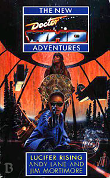

|
Lucifer Rising
|
BASIC PLOT DOCTOR COMPANIONS MATERIALISATION CIRCUIT PREPARATORY READING A familiarity with Love and War, and Deceit wouldn't hurt, but they're not essential. CONTINUITY REFERENCES Pg 27 "I have therefore summoned an Adjudicator from Ponten Six." Ponten IV will appear in Original Sin as the site of Adjudicator training camps (although perhaps they're supposed to be the same and somebody got their Roman numerals confused). But see Continuity Cock-Ups anyway. Pg 32 "Come on, Prof, the Spacefleet was hardly a rest cure." Ace spent three years in Spacefleet between Love and War and Deceit. Why she refers to it here with the definite article is a mystery. Pg 33 "'Eeney meeney miney moe,' he said, pointing alternately left and right, 'catch a Rutan by the toe.'" Which might be hard to do. Rutans appeared in The Horror of Fang Rock, Shakedown and Lords of the Storm. Pg 39 "Christopher Marlowe - Doctor Faustus." Yes, the quote about Lucifer is appropriate, but is it a coincidence that, in the old library card system, when you went to look up "Doctor Who", this was the entry immediately preceding it? Pg 44 "I work fast, Krau Summerfield." The Caves of Androzani. Pg 47 "You think there's something suspicious about us, don't you Trau Bishop?" The Caves of Androzani. Pg 49 "Her years in Spacefleet had affected her more than she thought." Love and War, Deceit. Pg 51 "The Guild of Adjudicators had nothing to adjudicate. They degenerated into a reclusive order of assassins known as The Knights of the Grand Order of Oberon" Revelation of the Daleks. I went looking for them once, to return something that was theirs. I couldn't find them." The Doctor promised to return Orcini's medals at the end of Revelation of the Daleks. Pg 56 "Sifranos is the fifth planet to be devastated in the Arcturus sector since the beginning of the year." Arcturus featured in The Curse of Peladon and Transit (albeit with different spelling). The buildup is the Dalek Invasion fleet (The Dalek Invasion of Earth), as we'll learn to the end of the novel. "We have nothing to fear but fear itself" The Earth president says this (quoting Franklin Roosevelt) as the Dalek invasion looms. This quote is the inspiration for the novel Fear Itself, set in the immediate aftermath of the Dalek invasion... and its use here may very well be what inspired that novel. (The symmetry is certainly quite beautiful.) Pg 57 "And now a report on the opening of the Earth Embassy on Alpha Centauri Five -" The Curse of Peladon, The Monster of Peladon. Pg 59 "Ever hear of the Hydrax?" State of Decay. Pg 62 "She smiled involuntarily as childhood memories washed over her; walking down Horsenden Hill back in Perivale on an icy day" Survival. Pg 64 "I wanted to study Arcturan literature" The Curse of Peladon. Pg 65 "Bernice looked away, remembering how her own father had vanished during the Second Dalek War." Love and War. "The Doctor estimated the size of the room as just a Drashig's eyestalk less than eight kilometres across" Carnival of Monsters. Pg 68 "Ace found herself remembering another death, another body consumed in flames, back when she'd been another person." Manisha, as told in the novelisation of Remembrance of the Daleks and Ghost Light. But see Continuity Cock-Ups. Pg 71 "Zyton seven fused with hymetusite using a parranium catalyst." Vengeance on Varos, The Horns of Nimon, Death to the Daleks. But see Continuity Cock-Ups. Pg 73 "IMC have tripled the price of zyton seven." Colony in Space, Vengeance on Varos (but see Continuity Cock-Ups). Pg 77 "He drummed his fingers lightly upon the desk in a complex jazz rhythm, considering." Silver Nemesis. Pg 78 Reference to Bombadier Daleks, which we haven't seen before. Pgs 79-80 "I drilled a hole through the motive units of a Special Weapons Dalek once." Remembrance of the Daleks. Pg 84 "An American subsidiary of a company called Panorama Chemicals filled the Carlsbad Caverns with plastic waste in twenty one forty" Global Chemicals, from The Green Death, was renamed Panorama Chemicals for the novelisation. Pg 89 "After all, the idea of travel had appealed to her long before the Doctor had turned up on Heaven." Love and War. Pg 91 "He reached out to touch her temple, and her anguished moans ceased immediately." This is similar to what he does in Battlefield and Survival. Pg 95 "In the centre of a dark and deserted refectory, the Doctor crooned a Venusian lullaby to himself." The Curse of Peladon, The Monster of Peladon. Pg 99 "Speaking realistically, a single trisilicate molecular filament woven into a tube." Trisilicate was the mineral of interest in The Monster of Peladon. Pg 101 "Do you know, for instance, that the inhabitants of the planet Delphon regard the surgical removal of limbs to be highly sexually alluring?" Delphon was mentioned in Spearhead from Space. Pg 102 "And that the Rills of Galaxy Four have developed a political system in which the uglier they are the more power they are given?" Galaxy Four. Pg 129 "'A great many years ago, a man in a mirror told me to do nothing. "It is done," he said.'" Warriors' Gate. Pg 130 "He blew on a plastic beaker of fragrant Arcturan tea." The Curse of Peladon. Pg 131 "The last he had heard she had returned to Ponten VI - the planet that had been ceded to the Adjudicators in perpetuity by a wary but appreciative Earth Central" We'll see such a planet in Original Sin. But see Continuity Cock-Ups. Pg 132 "We have lost fifteen colony worlds in three weeks. Azure, Qartopholos, Sifranos" Azure was one of the planets from Nightmare of Eden. Pg 137 Zelanite is one of the ores Toos calls out in The Robots of Death. (With thanks to J.A. Young.) Pg 140 "Remember Jan, do you, back on Heaven? Remember what you did to him?" Love and War. Pg 144 "Like your party trick with the neutron collectors and the hymetusite" The Horns of Nimon. Pg 148 "Arcturan, Lapsang Souchong or Earl Grey will be perfectly acceptable." The Curse of Peladon. Pg 150 "Out on the fringes of Vartaq Veil, looking for traces of her lost father, she had been part of a team excavating a Dyson sphere constructed around a white dwarf star." We'll see this in flashback, in The Also People, pgs 8-9. Pg 165 "Klokeda partha mennin klatch?" The Curse of Peladon/The Daemons/The Monster of Peladon. Pg 168 "I've always wondered how we can always understand what everyone says , no matter what language they're speaking." Quick Doctor, Bernice must be possessed by the Mandragora Helix! She's questioning the language ability, this is a whopping great clue! Or... perhaps not. Pg 171 "It was a dramatized retelling of the Martian invasion of Earth circa 2090." Transit. "She had made her reputation excavating the abandoned Ice Warrior citadels on Mars." The Ice Warriors appeared in The Ice Warriors, The Seeds of Death, The Curse of Peladon and the Monster of Peladon. Pg 187 "He has a respiratory bypass system, we can -" Pyramids of Mars. Pg 189 "From the messy consequences of the Kroagnon affair, to the vraxoin raids off Azure, from the Macra case to the Vega debacle, Bishop's record was immaculate." Paradise Towers, Nightmare of Eden, The Macra Terror, The Monster of Peladon. Pg 190 "You were expecting the Isley Brothers?" We'll see them in Happy Endings. Pg 195 "We Zed-bombed the barriers and went in with shielded skimmers." Z-bombs appeared in The Tenth Planet. Pg 199 "For the first time since Heaven, Ace thought of Julian" Love and War. Pg 204 "You told her about all the new drugs you could get from the Arcturans" The Curse of Peladon. Pg 208 "We have come across other species like you - the Cimliss, the Usurians, the Okk." The Usurians appeared in The Sunmakers. Pg 216 "Six pairs of polycarbide-armoured boots" The Daleks are made of bonded polycarbide armour, as established in Remembrance of the Daleks. Pg 222 "Picks me up! Like a piece of luggage, he picks me up and throws me, he does, throws me down the Pit!" This is very similar to Harry's dialogue in Robot, episode 1. Pg 236 "There is nothing down my trousers but a ferret." Reference to Sylvester McCoy's stage show and his unusual world record. Pg 242 "No matter what he and Bernice had been through, she knew in her heart of hearts that his guilt over what he had done to Ace on Heaven - and before - was a weakness" Love and War. Pg 249 "Mostly we just need the dwarf-star alloy derivative IMC marketed last year." Warriors' Gate. Pg 262 "grab hold of Dave at Ange's party" Ange appeared in Survival. Interesting that the eighth Doctor's companion Anji should have a boyfriend named Dave too. (With thanks to J.A. Young for noticing this.) "Don't go off to Margate with Julian" Love and War. Pg 265 "It was like trying to fathom Venusian" The Curse of Peladon et al. Pg 271 "It's just your basic, everyday story of a boy, a girl and a fungus..." Love and War. Pg 276 "When will the dwarf-star alloy derivative be ready?" Warriors' Gate. Pg 303 "'Did we pass through the black hole and out into some anti-matter universe on the other side?' 'Don't be absurd,' Bernice said" The Three Doctors. Pg 307 "'How do you know this?' The Doctor studied Legion carefully. 'By keeping my eyes open and my mouth shut.'" Tomb of the Cybermen. Pg 309 "Have you used me to affect the outcome of future events? Events like the Dalek Wars?" The Dalek Invasion of Earth. "It was you that manouvred me into Spacefleet, remember?" Love and War. Pg 311"I condemned untold billions to death by not destroying the Daleks at the moment of their birth, and I could have saved billions more by shooting down Davros like a mad dog when I had the chance." Genesis of the Daleks, Resurrection of the Daleks. Pg 320 "There's a morphic field for Alpha Centaurans and Arcturans and, Rassilon help us, even Daleks" The Curse of Peladon, The Monster of Peladon, the Daleks et al. Pg 330 "The man she had been willing to leave the Doctor for, and who the Doctor had cold-bloodedly led to his death for what he fondly supposed was the greater good." Love and War. Pg 331 Reference to Maire (Love and War). Pgs 331-332 "The slopes of Mount Cadon" Mentioned in Timewyrm: Revelation (pg 1). Pg 332 We visit a VR replica of Gallifrey. Mention of the Prydonian academy and the transduction barrier (The Deadly Assassin and The Invasion of Time). "About the vampire swarms and the legions of the sphinx?" The Time Lord war with the vampires was mentioned in State of Decay. Sphinxes would later prove important in Time Lord lore in Dead Romance. Pg 334 "The ship which had been sent to take her to the new dig on the Draconian-discovered planet of Heaven was leaving in a few hours." Love and War. The Draconians appeared in Frontier in Space. Pg 335 "Even if you had tried to tell Mummy that you didn't want the doll, she wouldn't have heard you." Bernice's mother was killed going back for Benny's doll, as told in Love and War. OLD FRIENDS AND OLD ENEMIES Pg 330 A VR recreation of Jan appears (Love and War). Pg 332 A VR replication of the Hermit appears (The Time Monster/Planet of the Spiders). Pg 332 A VR replication of the Master as a boy appears. Pg 335 A VR replication of Isaac Summerfield, although he appears as an insect in this dreamscape. Pg 338 "I knocked together a batch of highly contagious virus that will confer some small measure of protection on a handful of resistance fighters." This is why there are survivors from the Dalek plague in The Dalek Invasion of Earth. NEW FRIENDS AND NEW ENEMIES Pg 157 We see a simularity of Mark Bannen, whom we'll later meet in Parasite. This simularity, along with his father Alex, become entwined in a VR simulation at the novel's conclusion (pg 339). The Angels.
CONTINUITY COCK-UPS PLUGGING THE HOLES [Fan-wank theorizing of how to fix continuity cock-ups] FEATURED ALIEN RACES Pg 333 The Vart, in a VR recreation, native inhabitants of the Varteq Veil, the broken Dyson sphere that Bernice once excavated. They have spindly legs and a patterned carapace. FEATURED LOCATIONS Pg 300 A starpod. Pg 302 A transporter. IN SUMMARY - Robert Smith? |
|
 |